História e Exame Físico (sinais vitais: PA MSE e MSD)
Hipótese Diagnóstica
Coleta de Laboratório
Dor Torácica ou Equivalente Angionoso
Dor Tipo A (Anginosa): precondial intensa; em aperto (Sinal de Levine),
peso ou queimação; irradiação para pescoço, dorso ou MSE;
piora após esforço e alívio após repouso e/ou nitrato.
Paciente com diaforese associada.
Dor Tipo B (provavelmente angionosa): alguns fatores de dor tipo A
Dor Tipo C (provavelmente não angionosa): dor em pontada ou peso,
sem relação com esforço, mas sem fatores excludentes da dor tipo D.
Dor Tipo D (não angionoso): dura segundos, horas ou dias de dor, sem
relação com esforço, piora à digitopressão ou mobilidade do tronco ou
membros, pontada (localizada com a ponta do dedo).
Ultrasensível: 0 e 1 a 2 horas. Se > 3h de dor: basta 1 Troponina
Convencional: 0, 3 e 6 horas
Supra ST: não esperar resultado => 1a Troponina por ser negativa!
ECG com Supra ST (ou BRE novo)
Nova elevação Segmento ST, medida no ponto J, ≥ 1 mm em pelo menos 2 derivações contíguas =>
Exemplo: D2, D3 e AVF; V4, V5 e V6; D1 e AVL
V2 e V3: H < 40a (≥ 2,5 mm); H ≥ 40a (≥ 2 mm), Mulher (≥ 1,5 mm)
Derivações dorsais (V7, V8, V9) e de VD (V2R, V3R, V4R): ≥ 0,5 mm. Sempre realizar estas
derivações se houver Infra ST ou ECG normal com sintomas típicos de SCA
ECG Seriado: admissão, piora da dor ou clínica, 1h, 3h
Atenção: Onda Q, novo BRE ou BRD (raro)
Desafios e Diagnóstico Diferencial
ECG antigo: ajuda MUITO no diagnóstico diferencial
Alteração repolarização: jovens, magros, atletas, com alteração antiga
Sd. Takotsubo: DD difícil, muitas vezes apenas no CATE. Dor Torácica + ECG com Supra ST e
alteração típica na ventriculografia (CATE). Liberação de catecolaminas com alteração miocárdica
segmentar. Mais comum em mulher (menopausa) e associado a estresse.
Miopericardite: SupraST (“feliz”), difuso (sem relação com paredes), infra PR, infra AVR, sem
imagem em espelho. Sintomas recentes de Infecção (viral)
BRE + IAM Supra ST: Critérios de Sgarbossa modificados (pelo menos 1: S e E>90%))
Elevação do segmento ST ≥ 1mm com concordância na direção do complexo QRS
(supradesnivelamento apresenta mesma direção do QRS)
Depressão do segmento ST ≥ 1 mm nas derivações V1, V2 e V3
Discordância do Ondas ST/S ou ST/R > 0,25 ou 25%
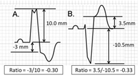
IAM COM SUPRA ST
2.1 PRESCRIÇÃO: AAS 200 mg (imediato) + Inibidor P2Y12 (ver abaixo):
critério de qualidade de Dor Torácica
Monitorização Cardíaca Contínua (MCC) + Pressão Não Invasiva (PNI) + Oximetria de
Pulso (OP)
Dieta Zero
Restrição ao leito com cabeceira 45°
Acesso venoso salinizado
Glicemia (HGT): agora e de 4/4h (tratar se HGT>180 mg/dL)
ECG: agora e de 1/1h (ou se piorar a dor)
Ondansetrona (Zofran) 8mg, IV, em caso de náusea ou vômito
Dipirona 1g, IV em caso de dor de cabeça
Cateter Nasal O2: 4L/min se SatO2 < 90%
2.2 SINTOMÁTICOS: TRATAR ISQUEMIA
Nitrato:
em caso de dor ou Hipertensão
Nitroglicerina (Tridil) em BI : 1 ampola (25 mg/5 mL) + 245 mL SG 5% => inicar 3 mL/h
(5 a 100 mcg/min)
Dinitrato de Isossorbida (Isordil): 5mg, VO, 5/5min (até 15 mg)
Contra-Indicação (CI): Hipotensão, Sildenafil (Viagra) < 48h, IAM VD
Morfina:
dor refratária a Nitrato. CI: IAM VD, Hipotensão
2.3 TRATAMENTO SÍNDROME CORONARIANA AGUDA
AAS 200 mg + Inibidor P2Y12 (ver abaixo) B.Bloqueador (< 24h): paciente sem IC, BAV ou Bradicardia. Ex.: Metoprolol 25
mg
VO, 1x/dia
Estatina (< 24h): (< 24h): Atorvastatina 80 mg VO
Espironolactona (< 24h): (< 24h): 25 mg/dia se disfunção sistólica (ECO
TT: FE < 40%)
Inibidor Glicoproteína IIb/IIIa (< 24h): Abciximab e Tirofiban=>
usado por Hemodinamicista
PA >=185 mmHg/110 mmHg (corrigir e reavaliar)
Anticoagulantes < 48h ou INR > 1,7; Heparina < 48 horas com PTT elevado; Plaquetas <
100.000/mm3
AVC isquêmico ou TCE < 3 meses;
Punção arterial (não compressível) < 7 dias; Cirurgia Maior ou procedimento invasivo < 2 semanas
MAV ou Aneurisma Cerebral ou Hemorragia Intracraniana prévia
Hemorragia urinária/digestiva < 21 dias; IAM < 3 meses
Suspeita de Hemorragia Intracraniana/Subaracnóide ou Dissecção de Aorta Aguda
Gestação, Endocardite ou Êmbolo Séptico
TRATAMENTO APÓS 24H: Internação CTI (UCI) > 48 horas
MCC + PNI + OP + Dieta Branda + Sintomáticos + Reconciliação Medicamentosa
AAS 100 mg: resto da vida
Inib.P2Y12 (1 ano): Ticagrelor 90 mg (12/12h) OU Clopidogrel 75 mg OU Prasugrel 10 mg
B.Bloqueador: paciente sem IC, BAV ou Bradicardia. Ex.: Metoprolol 25 mg VO, 1x/dia
iECA: paciente estável. Ex: Captopril 6,25 mg (12/12h)
Estatina: Atorvastatina 80 mg VO
Espironolactona: 25 mg/dia se disfunção sistólica (ECO TT: FE < 40%)
Anticoagulação:
Enoxaparina: 1 mg/Kg 12/12h (SC) até Angioplastia ou RVM ou D7 internação
Enoxaparina 40 mg (SC 1x/dia): após Angioplastia ou RVM ou D7
Heparina Não Fracionada: plena até 48h internação ou Angioplastia ou RVM
HNF profilática: após 48h internação ou Angioplastia ou RVM
Trombose Venosa (TVP) e Embolia Pulmonar (TEP)
Introdução
50 mil/ano. M: 34%
TVP: 2/3 (90% MMII). TEP: 1/3 ; (1/3 fatal). 1/3 etiologia desconhecida
Diagnóstico Clínico: 1/3 . Assintomáticos: 1/3
TVP proximal: Vv. femoral e poplítea
TVP distal: Vv profundas infrapatelares
Recorrência (40% em 10 anos): 7,2% em 6 meses, 11% em 1 ano, 19,6% em 3 anos, 29,1% em 5 anos, 34,3%
em 8 anos, e 39,9% em 10 anos.
Fator causal (pós-op, imobilidade): 3 meses de tratamento
Sem fator causal (recorrência 30%/5anos): 6 meses de tratament
Sd. Pós Trombótica: 1/3 dos pacientes. Escore Vitalla > 5
Wells (TVP)> >=2 TVP provável; <=1 TVP improvável
D-Dímero: S: 95%. E: 40%.
Alto VPN (99%). Idade>50: Anos x 10 mcg/L. Exemplo: 70 anos =>Normal até 700
Mais alto: vv proximais. Altos níveis: maior probabilidade de TEP
TEP: obstrução de uma ou mais Aa. Pulmonares
Sintomas: dispneia, dor torácica, hemoptise, palpitação, síncope (falência de VD?) ou
pré-síncope.
Indicação: instabilidade hemodinâmica causada pelo TEP
Outras potenciais indicações (avaliar): sobrecarga de VD, hipoxemia, piora evolutiva (ainda sem
hipotensão), trombo extenso
Posologia: 100 mg IV em 2h
Iniciar Anticoagulação após acabar a Trombólise (se PTT<2x normal)
TENECTEPLASE (TNK)
Bolus (5 seg): <60 kg (30 mg); ≥60 to <70 kg (35 mg); ≥70 to <80 kg (40 mg); ≥80 to <90
kg
(45 mg); ≥90 kg: (50 mg)
CONTRA-INDICAÇÃO À TROMBÓLISE
PA >=185 mmHg/110 mmHg (corrigir e reavaliar)
Anticoagulantes <48h ou INR > 1,7; Heparina < 48 horas com PTT elevado; Plaquetas <100.000/mm3
AVC isquêmico ou TCE < 3 meses;
Punção arterial (não compressível) < 7 dias; Cirurgia Maior ou procedimento invasivo < 2 semanas
MAV ou Aneurisma Cerebral ou Hemorragia Intracraniana prévia
Hemorragia urinária/digestiva < 21 dias; IAM < 3 meses
Suspeita de Hemorragia Intracraniana/Subaracnóide ou Dissecção de Aorta Aguda
Gestação, Endocardite ou Êmbolo Séptico
CHOQUE HEMORRÁGICO APÓS TROMBÓLISE: AVALIAR REVERSÃO (Risco x Benefício)
Crioprecipitado: 10 UI, IV, em 30 minutos: alvo Fibrinogênio > 150 mg/dL
Ácido Tranexâmico (Transamin): 10-15mg/Kg, IV, em 20 min
Se < 75 anos: Ataque 30mg IV => 15 minutos => Manutenção 1 mg/Kg, SC, 12/12h
Se ≥ 75 anos: Sem Ataque => 0,75 mg, SC, 12/12h
Se Cl < 30 mL/min: 1 mg, SC, 24/24h
Profilaxia de Tromboembolismo venoso
40 mg, SC, 1x/dia
Se ≥ 75 anos ou Cl< 30 mL/min: 20 mg, SC, 1x/dia
HEPARINIZAÇÃO (NÃO FRACIONADA)
TROMBOEMBOLISMO PULMONAR
Bolus inicial de 80 U/Kg: ATÉ 5000 UI
Iniciar a infusão com 18U/kg/h: iniciar a 10mL/h no máximo
Solução: HNF 5 mL (25.000 UI) + SG 5% 245ml IV => 100 UI/mL de solução
Solicitar PTTa a cada 4-6 horas, aumentando intervalo para 12 horas, quando se obtiver 2 controles
seguidos dentro da faixa ideal.
Obs 1: Arredondar a taxa de infusão para o valor mais próximo;
Obs 2: Quando o paciente tiver peso abaixo de 50 kg ou acima de 120 kg, mantenha respectivamente o
mínimo ou o máximo permitido pela tabela.
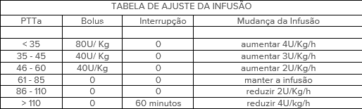
SÍNDROME CORONARIANA AGUDA:
Bolus inicial de 60 U/Kg (máximo 5000 U).
Iniciar a infusão com 12 U/kg/h (máximo 1000 U/h = 10 mL/h).
Solução: HNF 5ml + SG 5% 245ml IV.
Solicitar PTT a cada 6 horas, aumentando intervalo para 12 horas, quando se obtiver 2 controles
seguidos dentro da faixa ideal.
Sincronizar
apertar o botão Sinc (Sincronizar) do Desfibrilador: choque será disparado em cima do QRS => evita que o
choque caia ’em cima’ da onda T (fenômeno chamado de ‘R sobre T’) que pode levar a arritmia como FV.
Flutter e Taqui Supraventricular: 50-100 J
TV Monomórfica: 100J
Fibrilação Atrial (FA): 120 J
Chocar
Colocar gel nas pás: posicionamento das pás (HTD: infraclavicular D; HTE: ictus/precordial)
Afastar todos => Carregar => Chocar
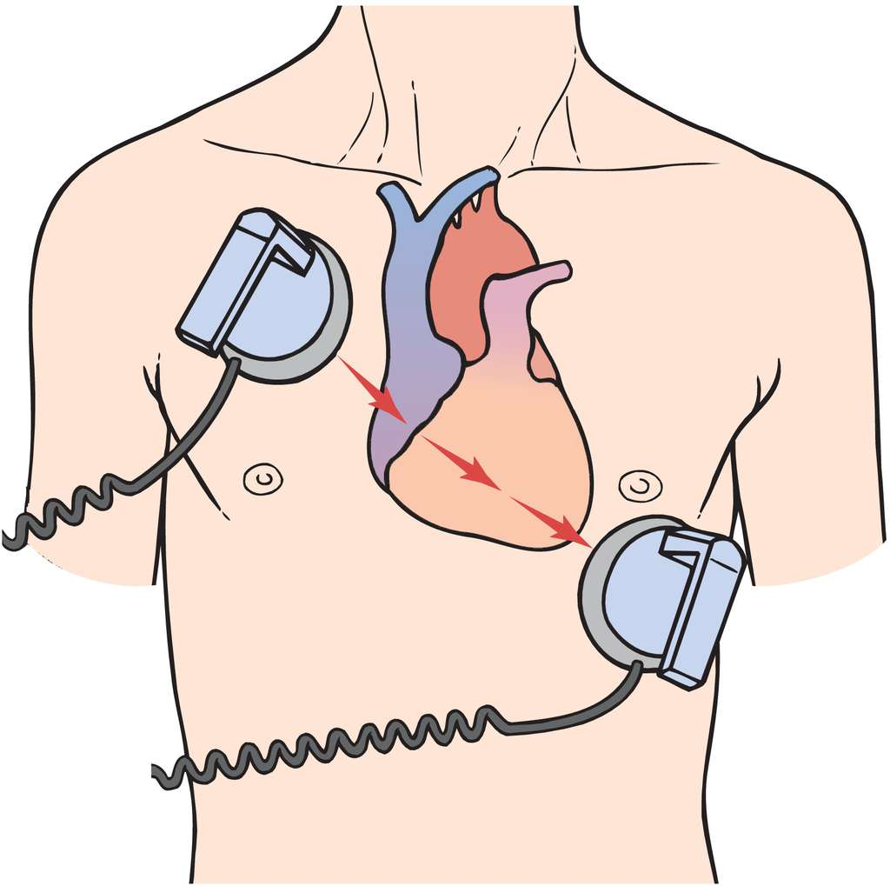
Observar
Não reverteu => chocar novamente com maior energia (200 J por exemplo)
Degenerou para FV => Desfibrilação (sem sincronizar!) 200 J => ACLS (RCP)
Protocolo de Dor Torácica
Avaliação, Escores de Risco e Diagnóstico Diferencial
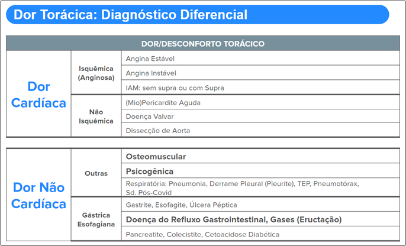
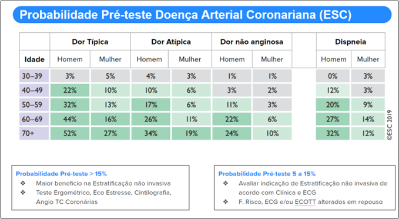
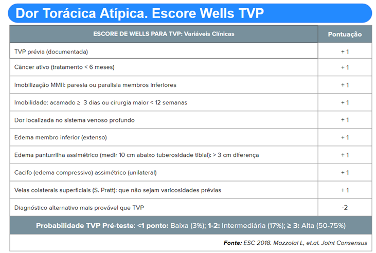
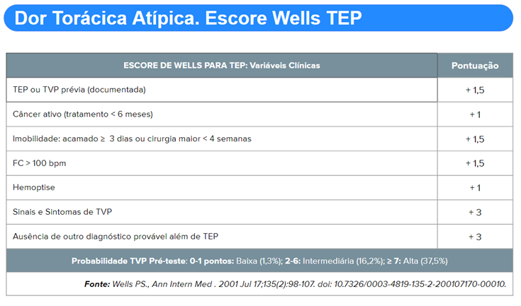
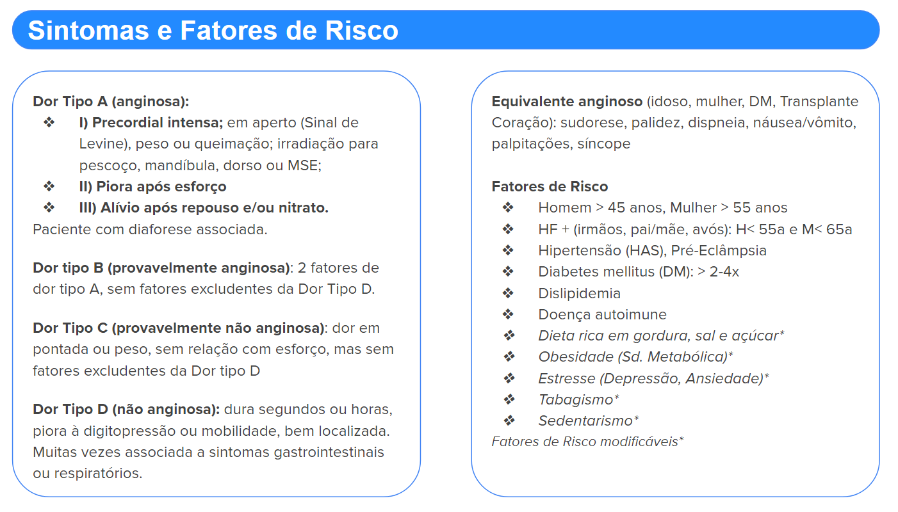
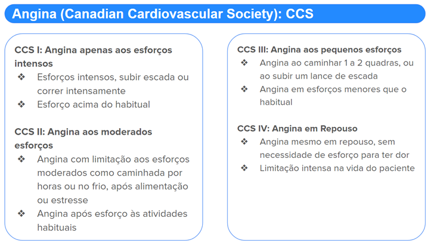
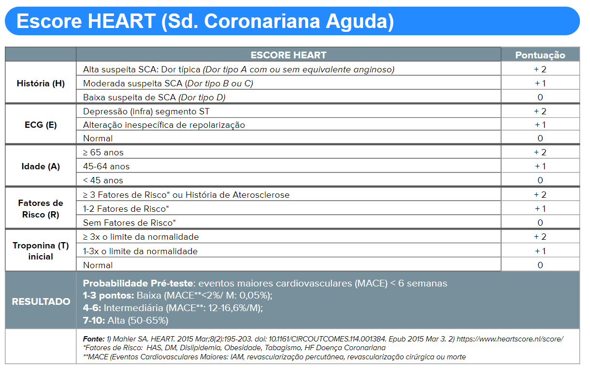
ECG com Supra ST
Quais as causas além do IAM?
Alteração de Repolarização Inespecífica (Benigna)
Alteração ST (côncavo, Supra feliz) difusa: sobretudo V2-V5 com Entalhe ponto J
Onda T assimétricas: concordantes com QRS. Relação Supra ST/T < 0,25
Ausência de espelho
Alteração de Repolarização Inespecífica (Benigna)
(V2-V6, DI, DII, DIII, AVF)
Entalhe J (DII, DIII, AVF). ST/T < 0,25 (V6)
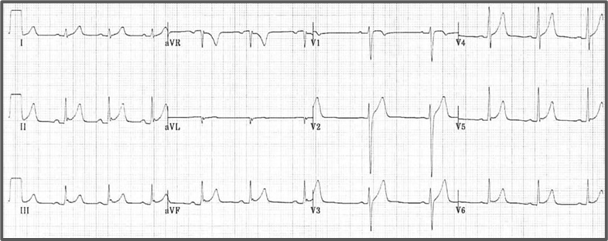
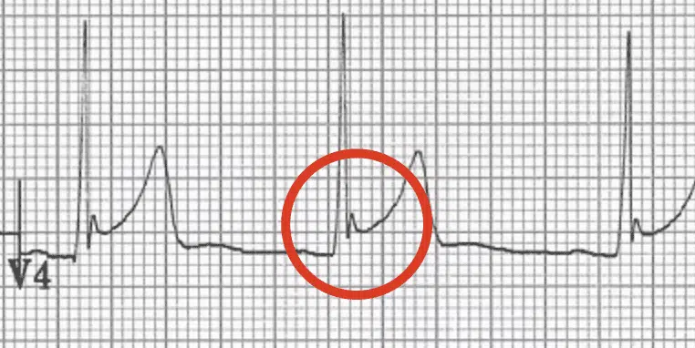
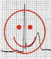
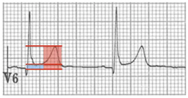 0,16 < 0,25">
Diagnóstico Diferencial: ECG com Miopericardite: FC 72 bpm
Elevação difusa ST + Infra PR (V4-V6) (D1, D2,D3, AVF)
Alteração recíproca V1 e AVR: Infra ST e Supra PR
Sinal de Spodick (DII): segmento TP descendente (melhor visualizada em DII e
derivações precordiais laterais); manifestação precoce de ECG (30% dos pacientes)
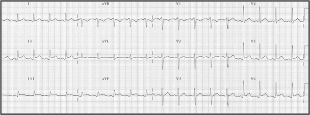
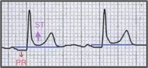
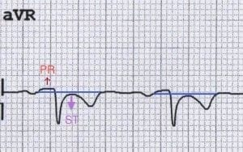
Infarto Agudo do Miocárdio com Supra ST (IAMSST)
IAM com Supra ST anterior (V1-V6, D1, AVL) + Imagem em Espelho (discreto: DIII e
AVF)
Paciente (mesmo acima) admitido com Dor Torácica => Tratar como IAM com Supra
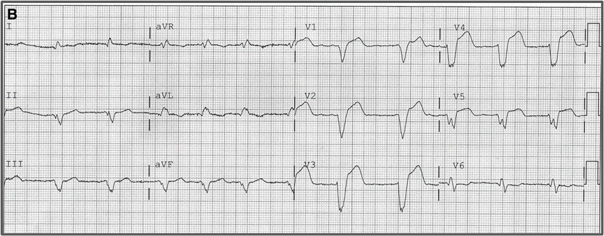
Hipercalemia (elevação de K+)
Alterações Evolutivas no ECG
Hipercalemia leve (K: 5,5 a 6,5): onda T apiculada
Hipercalemia Moderada (K: 6,5 a 7,5): ausência onta P, elevação ST, onda T apiculada
Hipercalemia Grave (K> 7,5): elevação ST com QRS alargado
Hipercalemia > 8-10: Onda sinusoidal, arritmia grave, TV
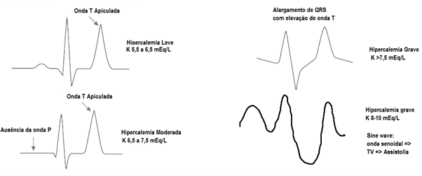
ECG: Hipercalemia (K: 8,1)
Supra ST + QRS alargado + onda T apiculada
Alterações difusas: não seguem topografia arterial coronariana
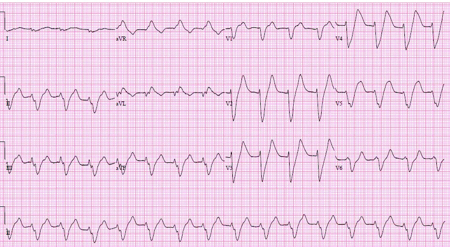
Hipertrofia Ventricular Esquerda (HVE)
Alterações do ECG
Elevação ST com ondas S profundas (V1-V3, em geral)
Infra ST (Strain, não isquêmico) e onda T invertida com onda R elevada (D1, AVL,
V5-V6)
ECG: Hipertrofia Ventricular Esquerda (HVE)
Supra ST + Onda S profunda de V1 a V3
Infra ST (Strain) e onda T invertida com onda R elevada (V5, V6)
Desvio Eixo para Esquerda (>-30°)
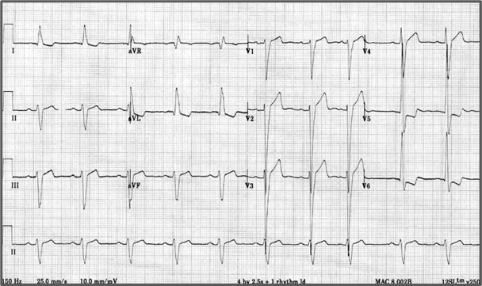
Aneurisma Ventricular (VE)
Alterações do ECG
Elevação ST residual + Onda Q patológica após IAM
Associado e lesão extensa de IAM com movimento paradoxal VE
ECG: Aneurisma de ponta de VE
Elevação ST residual + Onda Q patológica V1 a V3
Alteração sugestiva de IAM anteroseptal prévio
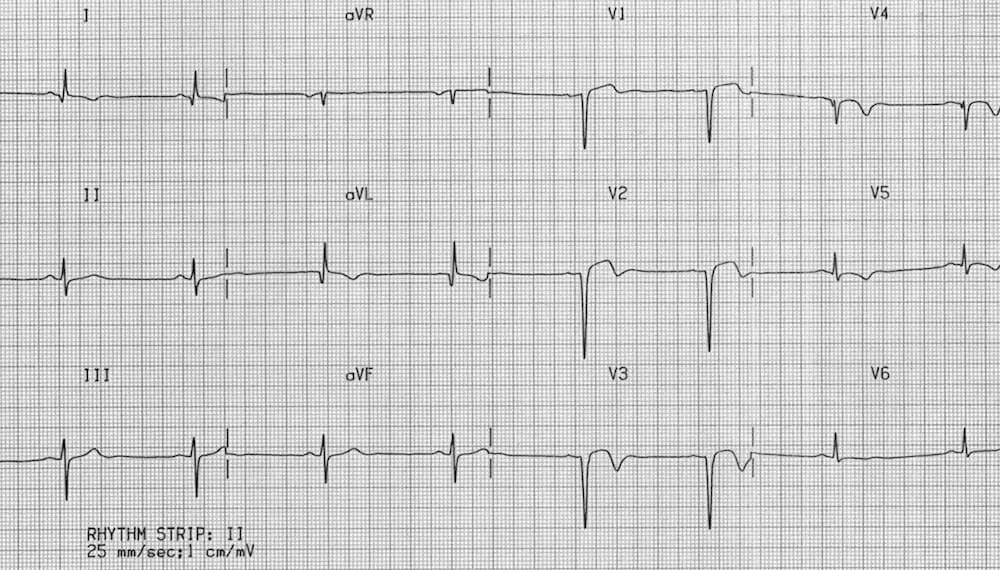
Síndrome de Brugada
Alterações do ECG: Canalopatia (canais de sódio) que leva a arritmias paradoxais
e morte
súbita em jovens
Tipo 1 (padrão abóbada): Supra ST côncavo (≥ 2mm): topo R’ com inclinação inferior
até onda T invertida (V1 e V2)
Tipo 2 (padrão em sela): Elevação ST (≥ 2mm V1-V3)+ Padrão BRD (rSR’) +
Descendência lenta (ST> 1mm) +Onda T positiva
Tipo 3: semelhante ao Tipo 2, com elevação ST < 1 mm
ECG: Síndrome de Brugada
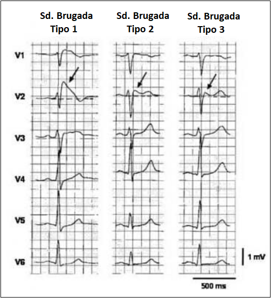
Marcapasso Ventricular (VE)
Alterações do ECG: fio de estimulação no VD
Elevação ST semelhante o padrão de BRE
Discordância apropriada: QRS com direção oposta ao segmento ST e onda T
Espículas de estimulação do marcapasso
ECG: Ritmo Marcapasso
Elevação ST semelhante o padrão de BRE
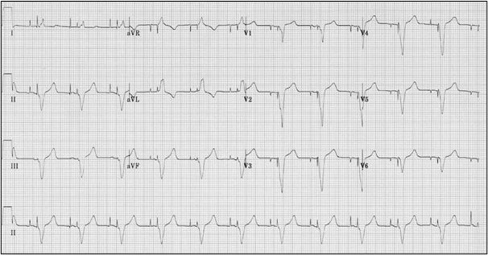
Hipertensão Intracraniana (VE)
Alterações do ECG
Supra ST ou Infra ST difuso que simula miopericardite
Onda T cerebral: ondas T profundas e simétricas
ECG: Hipertensão Intracraniana
Supra ST ou Infra ST difuso
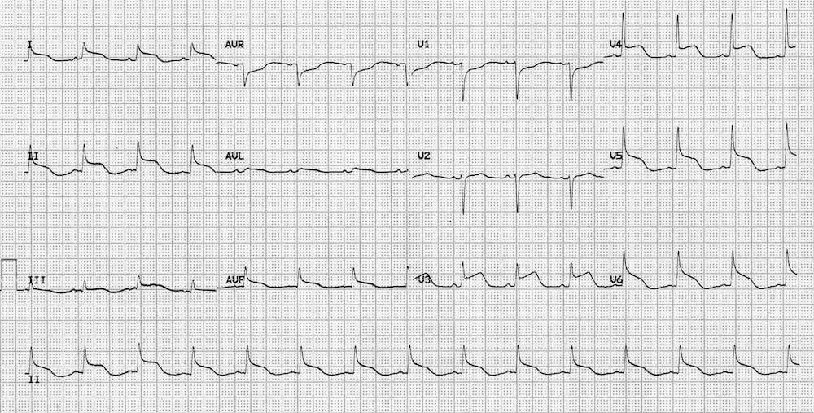
Takotsubo: Cardiomiopatia
Alterações do ECG: semelhantes a IAM com Supra ST
Paciente com quadro de dor torácica típica + Supra ST +Elevação Troponina
Síndrome do coração partido: alteração típica na ventriculografia e ECO
Associado a momentos de estresse intenso
ECG: Takotsubo
Supra ST anterior extenso
Alterações de repolarização difusa
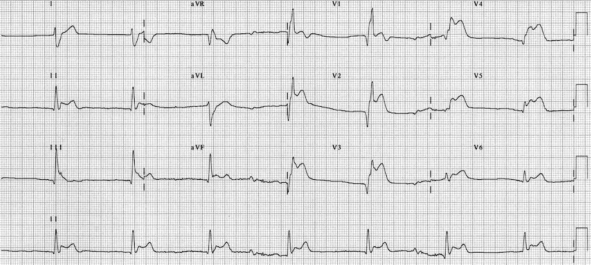
Pós Cardioversão Elétrica
Alterações do ECG: temporárias
Paciente após Cardioversão imediata
Supra ST transitório
ECG: Pós Cardioversão Elétrica
Ritmo Fibrilação Ventricular (FV) até o Shock (vide traçado: Shock 4: 368 J), seguido
de Supra ST (lembra um Supra de Brugada tipo 1, mas pode ser transitório)
Supra ST transitório pós Cardioversão
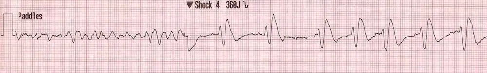
Hipercalcemia
Alterações do ECG
Cálcio Normal: 8,8 a 10,4 mg/dL (2,20 a 2,60 mmol/L)
Hipercalcemia leve (10,5 a 11,9 mg/dL), Moderada (12 a 13,9 mg/dL)
Hipercalcemia Grave (14 a 16 mg/dL):
Causas: Hiperparatireoidismo, Câncer (células escamosas, ,mieloma, linfoma),
intoxicação vitamina D
ECG: Supra ST, QT curto
ECG: Hipercalcemia severa 16,4 mg/dL
Onda de Osborn: elevação ponto J em precordiais, negativa em AVR e V1
Onda Epsilon (50%), Onda T invertida (V1-V3) na ausência de BRD (85%)
QRS alargado (*>120 ms) localizado: V1-V3
Elevação prolongada da onda S (V1-V3)
TV paroxística com morfologia de BRE
ECG: usar dupla velocidade (50 mm/s) e amplitude (20 mV/10 mm) e derivações de
Fontaine
ECG: DAVD
Sinusal, FC 72 bpm
Onda Epsilon em V1
QRS alargado, localizado: V1 e V2
Onda T invertida (precordial) na ausência de BRD
ECG: DAVD
TV paroxística com morfologia de BRE
Dissociação AV
Fontes
O USO DE DROGAS VASOATIVAS EM TERAPIA INTENSIVA. Medicina, Ribeirão Preto,
SimpÛsio: MEDICINA INTENSIVA: I. INFECÇÃO E CHOQUE 31: 400-411, jul./set. 1998
Vasopressores e inotrópicos na Sala de Urgência. Revista Qualidade HC. FMRP-USP
Terapia Intensiva: hemodinâmica/ Elias Knobel: Editora Atheneu.
Bernoche C, Timerman S, Polastri TF, Giannetti NS, Siqueira AWS, Piscopo A et al.
Atualização da Diretriz de Ressuscitação Cardiopulmonar e Cuidados de Emergência
da Sociedade Brasileira de Cardiologia – 2019. Arq Bras Cardiol. 2019; 113(3):449-663
Inotropes and Vasopressors; Circulation. 2008; 118: 1047-1056.
Tintinalli’s Emergency Medicine Manual, 8th Edition. Rita K. Cydulka, David M. Cline, O.
John Ma
Link MS, Berkow LC, Kudenchuk PJ, Halperin HR, Hess EP, Moitra VK , et al. Part 7:
Adult Advanced Cardiovascular Life Support: 2015 American Heart Association
Guidelines Update for Cardiopulmonary Resuscitation and Emergency Cardiovascular
Care. Circulation 2015 Nov;132(18 Suppl 2):S444-64.
John M. Field, et al. 2010 American Heart Association Guidelines for Cardiopulmonary
Resuscitation and Emergency Cardiovascular Care. Circulation. November 2, 2010,
Volume 122, Issue 18 supply
Guy S Reeder, MDHarold L Kennedy, MD, MPH. Overview of the acute management of
ST-elevation myocardial infarction. UpToDate. Literature review current through: Aug
2022. | This topic last updated: May 16, 2022.
Sgarbossa EB, Pinski SL et al. Electrocardiographic diagnosis of evolving acute
myocardial infarction in the presence of left bundle-branch block. N Engl J Med. 1996;
334: 481–487
Smith SW, Dodd KW et al. Diagnosis of ST-elevation myocardial infarction in the
presence of left bundle branch block with the ST-elevation to S-wave ratio in a
modified Sgarbossa rule. Ann Emerg Med. 2012; 60: 766–776
2017 ESC Guidelines for the management of acute myocardial infarction in
patients presenting with ST-segment elevation. European Heart Journal (2018) 39,
119–177.
Considerações
Os protocolos são usados como guias de tratamento para as doenças de forma
genérica, não específica ou exclusiva, e devem ser individualizados para cada
paciente de acordo com avaliação médica.
Os protocolos estão em constante atualização e os profissionais de saúde devem
estar sempre atualizados com as mudanças de Guidelines das Sociedades Médicas
(Conselho Federal de Medicina e Associação Médica Brasileira e sociedades médicas
de especialidades), não sendo este guia uma conduta absoluta para todos pacientes.
Os medicamentos são descritos com o nome de genéricos (substância química). A
descrição dos medicamentos éticos (de marca) não tem objetivo de preferência, mas
apenas de referência, como nomes populares no mercado e entre profissionais de
saúde e entre os pacientes.
Medicamentos em itálico são opções de tratamento de acordo com o quadro clínico
individualizado de cada paciente e de responsabilidade do profissional de saúde que
o prescreve, por ser a prescrição médica um ato médico.